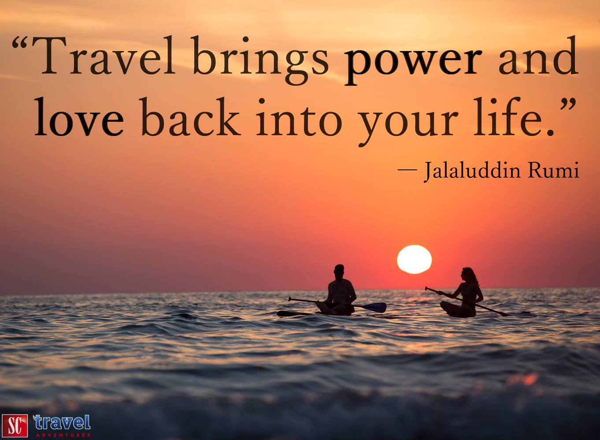
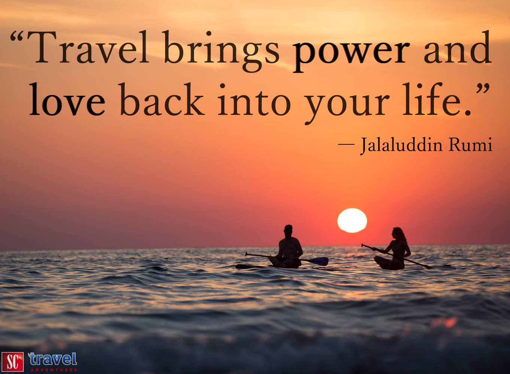

I am a UX/UI Designer.
When I set my mind to something, I fight to make it a reality.
I will fight to make your goals a reality as well.
I’ve spent my life in Vancouver, Frankfurt, and Los Angeles, which has taught me to be flexible and open-minded.
Some of my hobbies include cooking, baking, playing games and camping. I’m also starting to get into kayaking and mountain biking and would love to learn to play the piano.
For more about me, feel free to visit my instagram.
My Path to UX
I first learned about UX early in 2018. I had decided that I wanted to get into tech as I think it’s important for more women to be in that industry. I’d been selected to receive a free scholarship for a front-end course through Udacity and was so excited to jump in!
What I realized, is that I enjoyed all of the aspects of coding that affected the aesthetics of my projects, but was not passionate about coding itself.
Through this, I learned about UX and UI design and instantly felt that it was what I needed to do. I researched bootcamps for months and started to self-teach on the side and finally found and enrolled in Bloc.
I chose Bloc for it’s thorough curriculum. Not only did it incorporate all of the UI and UX principles, but it also had sections of front-end, which I recognized to be beneficial for my future. Both in order to code things myself, but also to be able to better work with developers in future roles.
I’m wrapping up my program now with this shiny new (fully coded by me) website to show off some of my skills.
My Background
- Analytics
- Client Management
- Creating Schedules
- Creative Strategy
- Delegating Assignments
- Design
- Research
- Sitemapping
- SEO
- Project Management
- Marketing
- UX/UI
Always Creative, Never A Creative
Though design was never in my title, I always sought out ways to bring design and other creativity to my life. Utilizing various mediums both on paper and computer, I’ve always itched for a more creative role.


 



Want to know more?